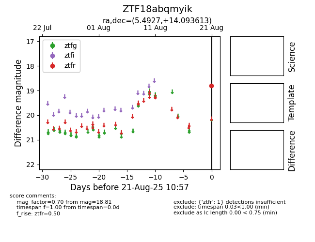

Target ZTF18abqmyik at 2025-08-21 10:57, see:
FINK: fink-portal.org/ZTF18abqmyik
Lasair: lasair-ztf.lsst.ac.uk/objects/ZTF18abqmyik
ALeRCE: alerce.online/object/ZTF18abqmyik
alt names
ZTF18abqmyik (ztf,alerce)
coordinates:
equatorial (ra, dec) = (5.4927,+14.09361)
galactic (l, b) = (112.1866,-48.16239)
photometry
last ztfr=18.81
1 ztfr detections
